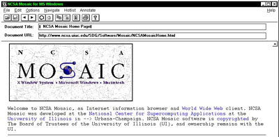
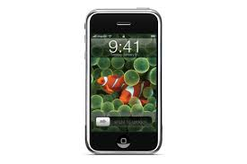
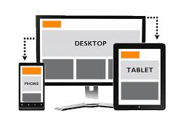

1960
Het onstaan van het www
Hedendaags word het wereld wijde web gezien als een van de grootste uitvindingen in de geschiedenis. Het ontstaan van het wereld wijde web was niet mogelijk geweest als er niet al een basis had gelegen van telefoon draden. Dus ook deze technologie was alleen mogelijk omdat er al een andere technologie bestond. Het originele onderzoek werd betaald door DARPA, Defense Advanced Research Projects Agency. Ondanks dat het onderzoek werd gesubsidieerd door DARPA werd het niet onderzocht door militair personeel. Doordat dit niet het geval was heeft het internet zo’n open karakter, geen center en is het internet zo vrij.
1996
Creating killer websites
In 1996 publiceerde David Siegel het boek “Creating Killer Websites”. Hierin werden technieken beschreven waardoor designer betere designs konden maken. Ze konden ineens width en height bepalen, de hoeveelheid witruimte en ook door het gebruik van tabellen de lay out naar hun wens aanpassen. Html werd gebruikt als een gereedschap voor uiterlijk en niet voor de betekenis van de content.
1998
Css veroverd
In 1998 ging het allemaal in een keer heel erg snel. Met de uitgifte van internet explorer 5 kwam ook goede ondersteuning voor Css. Html hoefde niet meer gebruikt te worden waar het niet voor bedoeld was en Css nam de rol van het opmaken over. Designers gebruikte de kracht van Css om hele mooie designs te maken die in die tijd nog niet eerder waren gezien.
2004
In 2004 werd het eerste social media platform Facebook geïntroduceerd ook dit bracht veel te weeg op het wereld wijde web. Het social media platform werd echter pas echt een hit toen het in 2006 openbaar werd voor iedereen. Dit bood de mogelijkheid voor mensen om dingen makkelijk te delen over het internet. Dit was de grondlegging voor veel andere social media platforms.
2007
De iphone ziet het licht
In september 2007 bracht Steve Jobs de iPhone uit. De iPhone zou het werkveld van designers een stuk moeilijker gaan maken. De iPhone was de eerste mobiele telefoon die Html kon renderen. Door de presentatie van de iPhone kwamen er in een keer heel vele nieuwe uitdagingen. Hoe wist je of iemand op een telefoon zat? Hoe weet je of een telefoon bepaalde plug-ins ondersteund? Designers moesten opeens met meer dan één scherm rekening houden.
2010
Het begin van responsive web design
In 2010 werd er een presentatie gegeven door Ethan Marcotte, hij legde uit hoe websites gebouwd zouden kunnen worden als gebouwen die zich aanpassen aan de behoefte van gebruikers. Dit was het begin van responsieve webdesign. De site past zich aan aan de schermgrote of het device wat jij gebruikt. Door dit idee werden pixels vervangen door percentages en ontstond media queries om het aan te passen aan het juiste device.
2016
Mobile first

Een trend die je de laatste jaren steeds meer terugziet is mobile first. Hoe vroeger iedereen naar een site ging via een desktop gaan steeds meer mensen via mobiel naar sites. Designers gaan steeds meer ontwerpen vanuit mobiel waarbij desktop opschuift naar de tweede plek
2018
The toekomst
Niemand kan voorspellen wat voor devices er nog bijkomen en hoe het world wide web zich ontwikkeld. Één ding is zeker en dat is dat het internet zich continu ontwikkeld. Als designer moet je altijd bezig zijn om bij te blijven met de laatste ontwikkelingen.